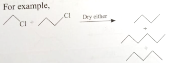
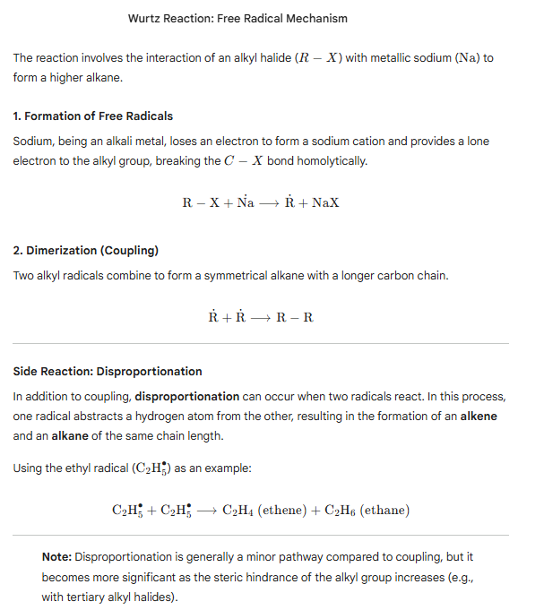
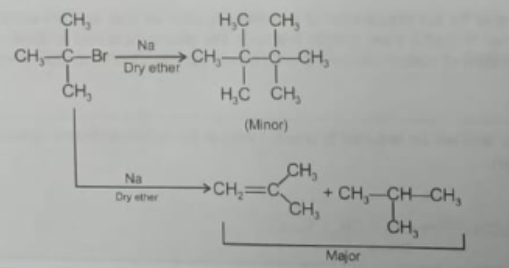
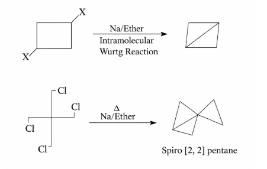

The Wurtz reaction is an important organic reaction used for the preparation of higher alkanes. In this reaction, two molecules of alkyl halides react with sodium metal in the presence of dry ether to form a new carbon–carbon bond, producing a higher alkane.
The reaction was discovered by the French chemist Charles Adolphe Wurtz in 1855. It is mainly used for the synthesis of symmetrical alkanes where two identical alkyl groups combine together.
2 R–X + 2 Na → R–R + 2 NaX
Where:
The reaction takes place in the presence of dry ether, which acts as a solvent and helps stabilize the intermediate species formed during the reaction.
When methyl bromide reacts with sodium metal in dry ether, two methyl groups combine to form ethane.
2 CH₃Br + 2 Na → C₂H₆ + 2 NaBr
Similarly, when ethyl bromide reacts with sodium, butane is formed.
2 C₂H₅Br + 2 Na → C₄H₁₀ + 2 NaBr
If the 'R' group attached is different, then it leads to the formation of three alkanes.
R - X + 2Na + X - R' → R-R + R-R' + R-R'+ 2 NaX

The Wurtz reaction proceeds through a free radical mechanism. Sodium metal provides electrons which lead to the formation of radical intermediates.

In case of tº halide, Reaction is not possible as mayur product is according to dehydrohalogenation which means the reaction holds only far a P° or S° halide.

